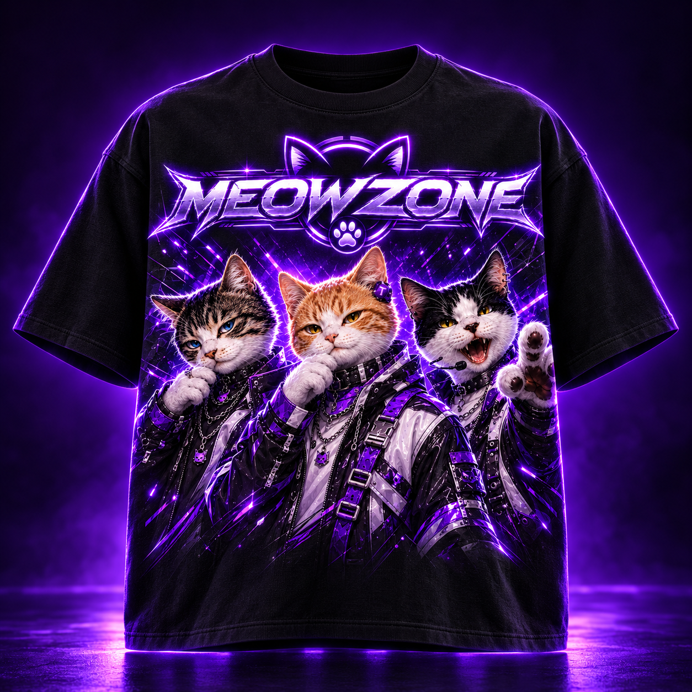
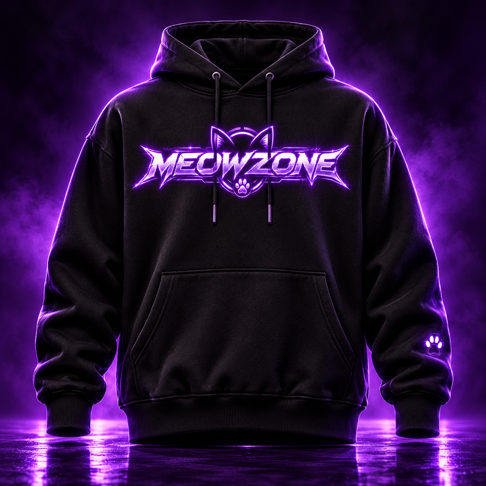
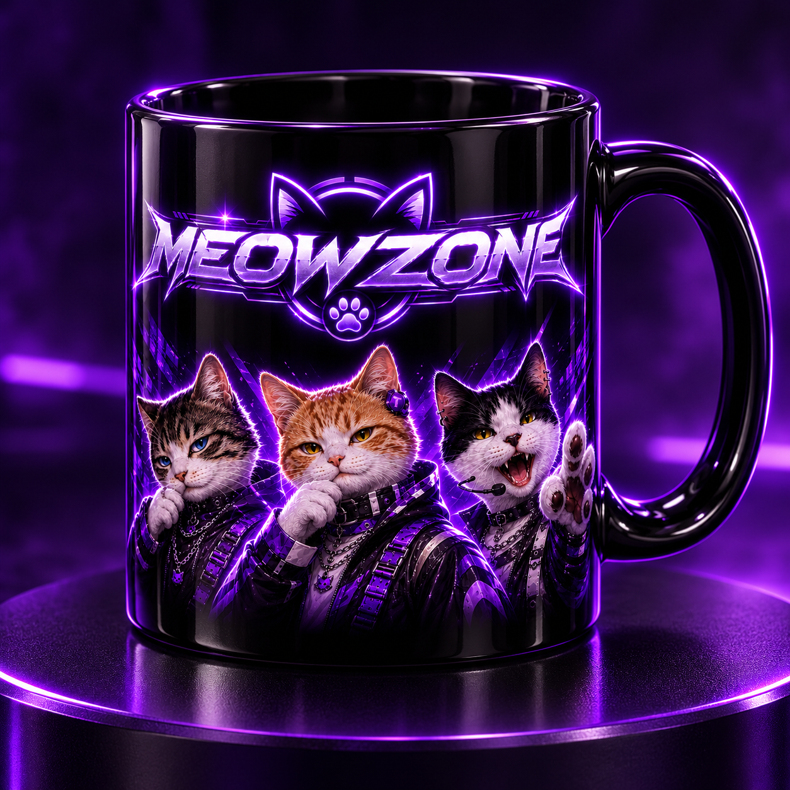
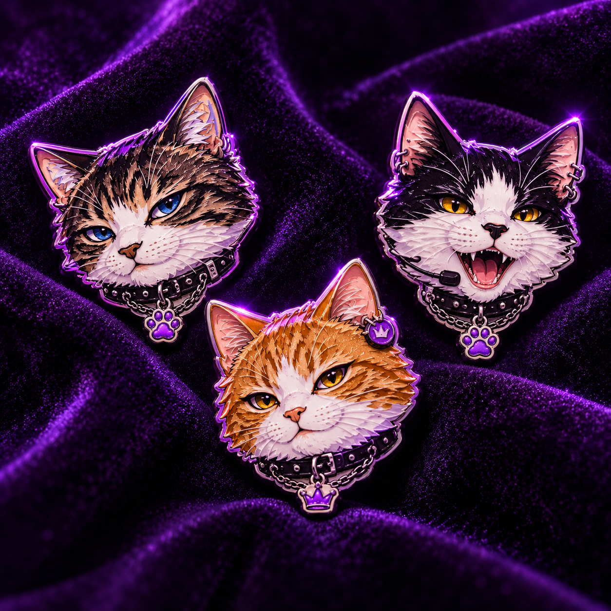
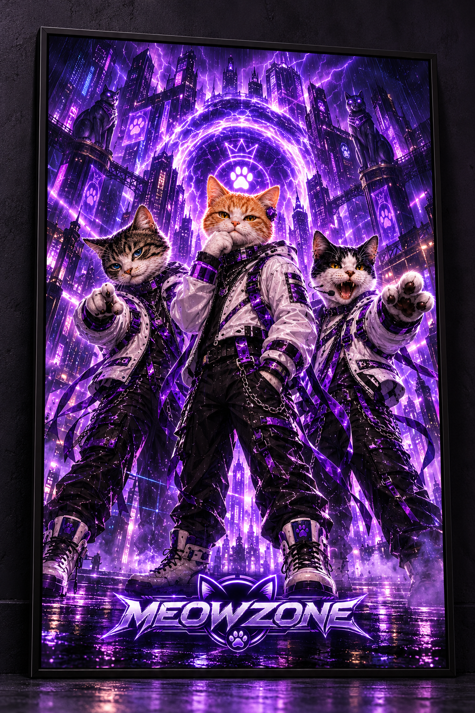
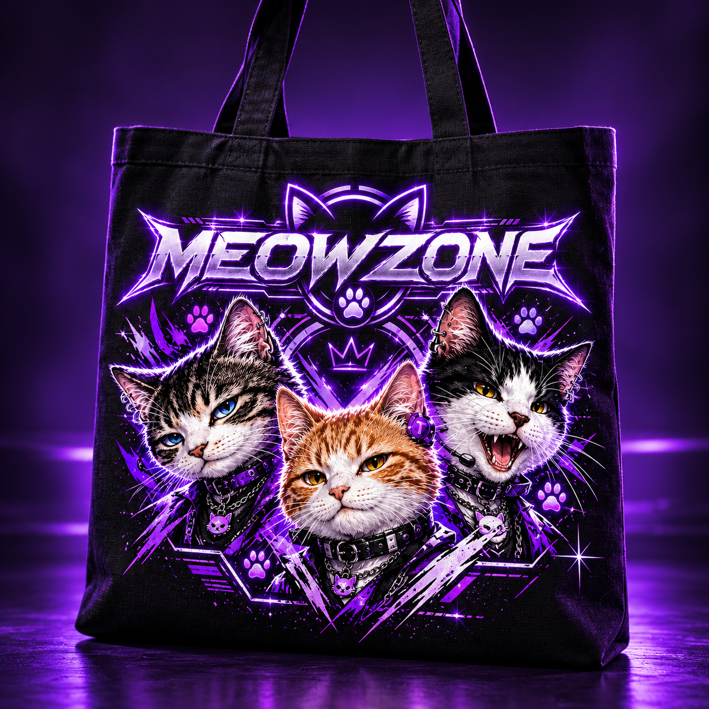
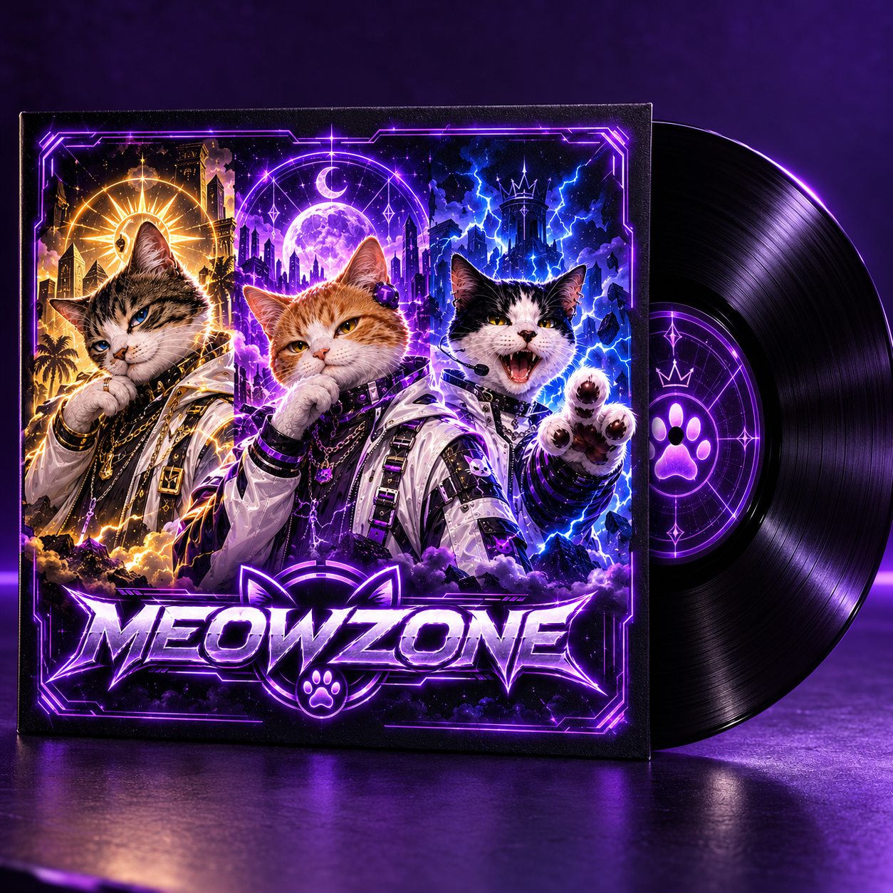
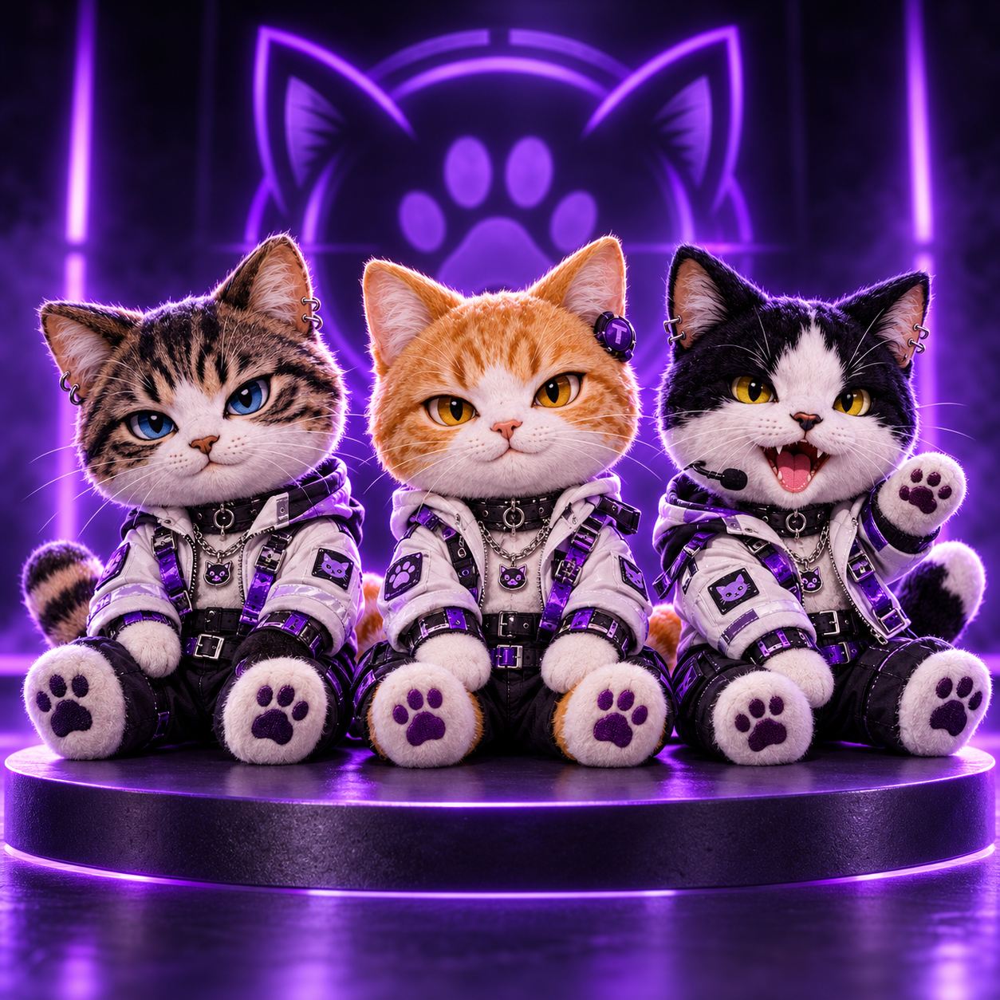

01 / RopaCamiseta Three Cats
El trío completo, una sola declaración de estilo. Negro profundo, energía violeta y las tres miradas que iniciaron todo.
Una colección imaginaria inspirada en las vidas, la música y el neón de Jinu, Taeo y Siwoo.
Tienda decorativa: estos productos son ficticios. No están a la venta ni se aceptan pedidos.
Explorar la colección ↓
Ocho ideas de merchandising para fans de las tres vidas más ruidosas de la zona.

01 / RopaEl trío completo, una sola declaración de estilo. Negro profundo, energía violeta y las tres miradas que iniciaron todo.
Una silueta oscura para las noches de neón, con el emblema MeowZone encendido al frente y una huella en la manga.

03 / ObjetosJinu, Taeo y Siwoo para acompañar el primer café, el último té o cualquier pausa antes de la próxima misión.

04 / ColeccionablesUna pequeña pieza para cada integrante: el azul de Jinu, el ámbar de Taeo y el dorado eléctrico de Siwoo.

05 / ArteUna escena nueva para la pared: el trío frente a un portal eléctrico en una ciudad bañada en neón.

06 / AccesoriosUna ilustración expresiva de Jinu, Taeo y Siwoo para llevar un pedacito de MeowZone a todas partes.

07 / MúsicaUna portada alternativa que imagina a los tres integrantes entre soles, lunas y tormentas. Una pieza para contemplar.

08 / ColeccionablesLas tres personalidades de la banda convertidas en compañeros de estantería, con sus chaquetas y patitas violetas.
Estos artículos son diseños decorativos para imaginar el universo de MeowZone fuera de la pantalla. No se fabrican ni se venden aquí. Puedes seguir explorando la banda y su música sin registros ni compras.